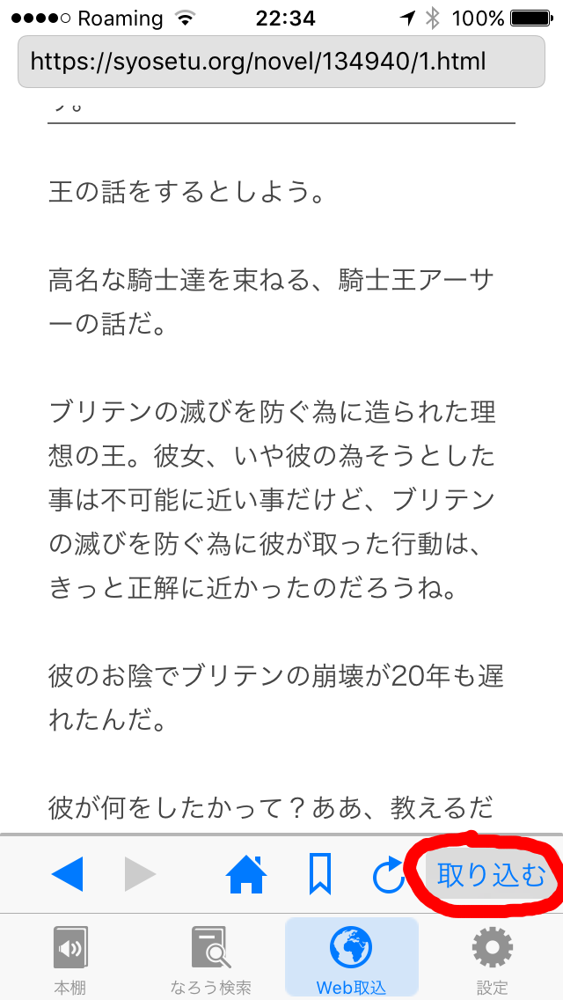
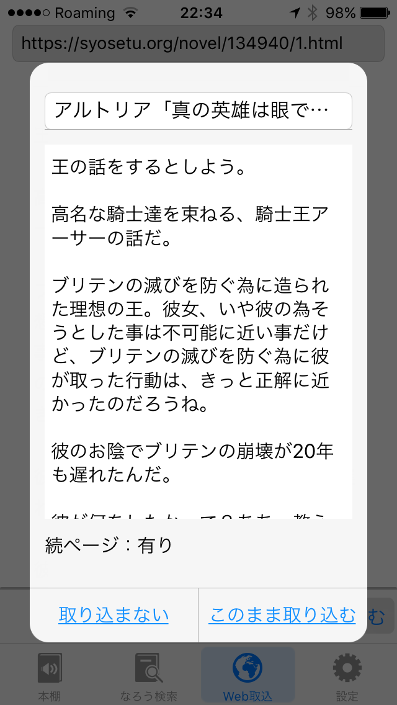
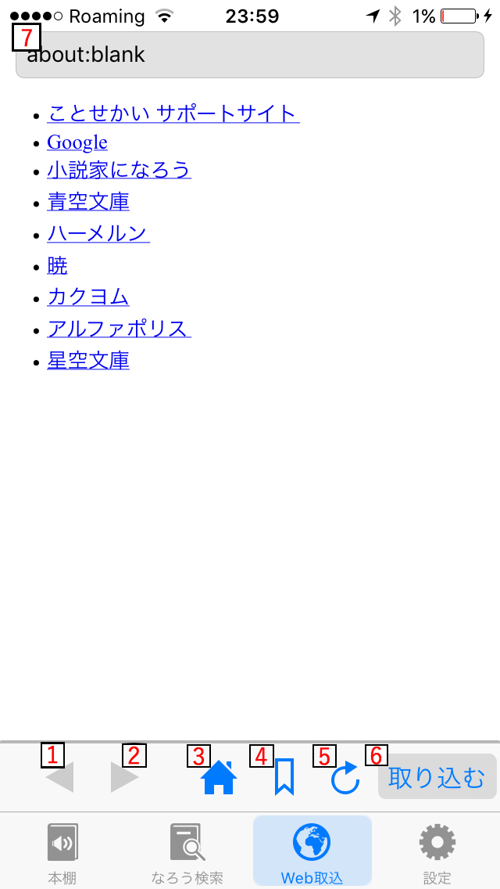
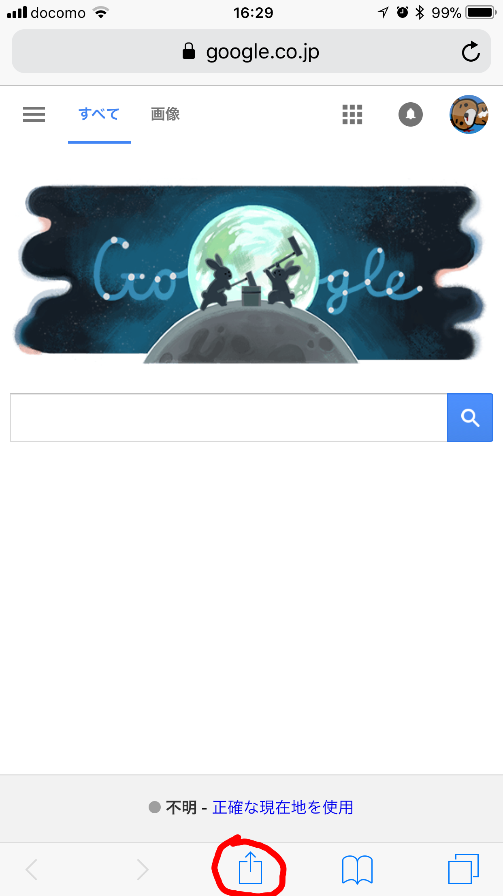
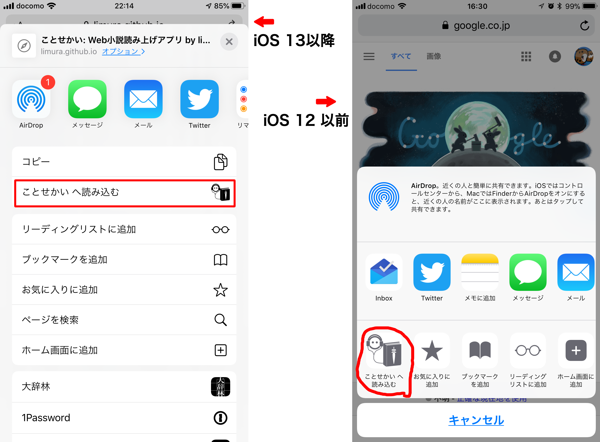

目次
Web取込機能について
Web取込機能は、Webページに表示されている文字列を ことせかい に取り込む機能です。 全てのWebページを取り込めるわけではありませんが、いくつかの対応サイト等では既存の なろう検索 で取得した小説と遜色のない形で文書を取り込むことができるはずです。
Web取込機能について、簡単な使い方と、うまく動かない場合の例を動画にしてみました。ざっくりと使い方を知るためには動画を観るのもいいかもしれません。
Web取込機能は、Webページに表示されている文字列を ことせかい に取り込む機能です。 全てのWebページを取り込めるわけではありませんが、いくつかの対応サイト等では既存の なろう検索 で取得した小説と遜色のない形で文書を取り込むことができるはずです。
Web取込機能について、簡単な使い方と、うまく動かない場合の例を動画にしてみました。ざっくりと使い方を知るためには動画を観るのもいいかもしれません。
動画のものと重複するところもありますが、Web取込機能の使い方について書き下しておきます。
Web取込機能を使うには、ことせかい の「Web取込」タブを利用します。 Web取込タブにて、取り込みたい内容を表示した状態で、右下にあります「取り込む」ボタンを押すことでそこに表示されている文字列を借り読み込みで取り込みを開始します。

借り読み込みが完了すると、読み込まれた文字列やタイトル等の情報がダイアログて表示されます。

本棚に登録された文書は、自作小説とほぼ同じ扱いとなりますので、タイトルや本文の修正が可能です。 また、借り読み込み結果のダイアログで「続ページ：有り」と表示されたものについては、表示されている物以降に続く文書を別の章として順次読み込んでいきます。 この続ページについては、設定タブの「小説の自動更新」がONになっている時には定期的に続ページが更新されているかどうかを確認して、更新があった場合には新しい章として追加します。
Web取込機能はWebブラウザを内包しておりますので(そのおかげで一旦レーティングが17+になりましたが、通常の方法ではGoogleへとアクセスできなくすることでレーティングを9+に戻しました)、所謂普通のWebブラウザっぽい事ができるようにしてあります(けれども、本気のWebブラウザを作ろうとするととても大変なので、簡易版という感じで作成しております)。 以下に、ざっと画面構成とそれぞれの説明を記しておきます。
Web取込タブは以下のようなボタン等があります。

このWeb取込機能は、Safariからも利用することが可能です。 Safariから利用する機能は、Safari のシェアボタンを利用します。(それ以外のアプリからのシェアボタンでは恐らくは正常に機能しません)ですので、まずは Safari を起動してください。 Safari にはシェアボタン(四角い箱から上向きの矢印が出ているボタン)があります。表示されていない場合はページを一番上までスクロールさせてみると出てくると思います。


Web取込機能はWeb上で発表される小説を読み込むために、以下のような仕組みを導入しています。
(過去には wedata というサービス上の「ことせかいWebページ読み込み用情報」と「AutoPagerize」の二種類のデータベースを利用していましたが、wedata のサービス終了に伴い現在は利用していません。wedata のドメインは現在別のサイトになっていますのでご注意ください。)
ところで、SiteInfo に登録されていないWebページについては先程の4つの仕組みがうまく機能しません。 うまく機能しなかった場合は最初に挙げました動画の二つ目(うまくいかない場合)のように、表示されている全ての文字が取り込まれます。 これをなんとかするには、
以下に、SiteInfo を自分で編集しようとした時のガイドを書いておきます。
まず、現在の SiteInfo の運用について説明しておきます。
SiteInfo の1エントリ(スプレッドシートの1行)は「あるWebサイトからどうやって小説を抜き出すか」の定義で、主に以下のような項目があります。 どのページのどの部分を抜き出すかは、基本的に xpath で指定します(xpath については後述)。
url: このエントリを適用するURLにマッチする正規表現。取り込もうとしているページのURLがこの正規表現にマッチした時に、そのエントリが使われます。pageElementV2: 本文として取り込む部分の指定。少し特殊な書式なので後で詳しく説明します。title / subtitle / author / tag: それぞれ小説のタイトル・章のサブタイトル・作者名・タグを抜き出す xpath。nextLink: 「次のページ」へのリンクを指す xpath。これが取れると続きのページを順次読み込めます。firstPageLink: 目次ページ等から「最初のページ」へのリンクを指す xpath。isNeedHeadless: JavaScript でページを描画するタイプのサイトで true にします(内部のWebブラウザで描画してから抜き出すようになります)。waitSecondInHeadless, nextButton, injectStyle, checkTargets 等)がありますが、まずは url と pageElementV2、必要なら title や nextLink あたりを書けば動くはずです。
「設定タブ」→「最優先SiteInfoを編集・追加」を開くと、この端末で編集された「最優先SiteInfo」の一覧と、アプリに読み込まれている「標準データ」の一覧が表示されます。
pageElementV2 等の書式ミスもここで警告として表示されます。
pageElementV2 は「本文としてどの要素を取り込むか」を指定する項目で、以前の pageElement の後継です(スプレッドシート上の pageElement 列は旧バージョンのアプリ向けに pageElementV2 から自動生成される数式列になっているので、編集するのは pageElementV2 の方です)。
書き方には次の2通りがあります。
1. 1行だけで書く場合: 値の全体がそのまま本文の xpath として扱われます。従来の pageElement と同じです。複数の要素を取り込みたい場合は xpath を | で繋げます。
//div[@id='novel_honbun']2. 複数行で書く場合: 「取り込み対象」を複数定義する書式になります。1行につき1つの取り込み対象を、
ID:日本語タイトル/English title=xpath1:本文/main content=//div[@id='honbun']
2:前書き/Preface=//div[@id='maegaki']
3:後書き/Afterword=//div[@id='atogaki']複数行で書くと、そのサイトの取り込み対象をユーザが選べるようになります。具体的には、
書式の細かい規則は以下の通りです。誤解しやすいので気をつけてください。
ID:タイトル=xpath 形式である必要があります。逆に、1行だけで書く場合は xpath の途中で改行してはいけません。: より前の部分。空にはできず、: そのものを含められません。標準データでは 1, 2, 3 のような連番にしています。: から最初の = までの部分。/ で区切って「日本語タイトル/英語タイトル」の順で書きます。英語タイトルは省略できます(その場合は英語UIでも日本語タイトルが表示されます)。この規則上、タイトルに = を、日本語タイトルに / を含めることはできません。= から行末までの全部。xpath 自体に = や : が含まれるのは問題ありません。動作の仕組みと、書く時に注意して欲しい点も挙げておきます。
| で繋いだ1つの xpath として評価します。そのため、各行の xpath は | で結合されても壊れない式にしてください。1・タイトル「本文」の取り込み対象1つとして扱われます)。xpath は XML や HTML の文書について、そのエレメント(特定の部分)を指定するための言語です。「xpath 書き方」で検索 したりすると、ざっくりとした書き方とかは解るかと思います。
document.evaluate("//ul[@class='about']", document, null, XPathResult.ORDERED_NODE_SNAPSHOT_TYPE, null).snapshotItem(0)//ul[@class='about']" の部分が xpath です「最優先SiteInfoを編集・追加」で保存した内容は、保存した時点からその端末で有効になります。また、同じ画面の「この値で今すぐテスト」も保存前の値でそのまま検査できますので、SiteInfo の動作確認のために特別なデバッグモード等は必要ありません。
一方、標準の SiteInfo(Googleスプレッドシートから配信される分)は、毎回読み込んでしまうのは冗長であるということから、一定の時間(だいたい1日位)はlocalに保存されたキャッシュを参照するようにしています。標準データの更新をすぐに反映させたい場合は、「設定タブ」の「SiteInfoを読み直す」を使ってください。
また、上級者向けの機能として、「設定タブ」→「内部データ参照用URLの設定」の「ことせかい用SITEINFO」欄に自前でホストしたCSVのURLを指定することで、標準の SiteInfo ごと差し替えることもできます。
これらの機能をうまく使って SiteInfo を編集して頂き、うまく動いたものを開発者まで送って頂けるととても助かります。よろしくお願いします。
こちらなのですが、iOS(又は iPad OS)を再起動すると直る事があるという話があるので、一度それを試してみて下さい。